Lab4_ILA
Introduction
In this lab you will use the uart_led design that was introduced in the previous labs. You will use Mark Debug feature and also the available Integrated Logic Analyzer (ILA) core (in IP Catalog) to debug the hardware. For the linux, please refer to the document to manually install the driver.
Objectives
After completing this lab, you will be able to:
-
Use the Integrated Logic Analyzer (ILA) core from the IP Catalog as a debugging tool.
-
Use Mark Debug feature of Vivado to debug a design.
-
Use hardware debugger to debug a design.
Design Description
Quick recap: The design consists of a uart receiver receiving the input typed on a keyboard and displaying the binary equivalent of the typed character on the LEDs. When a push button is pressed, the lower and upper nibbles are swapped.
Steps
Step 1 Create a new project and add source
Please copy the whole Lab2 project and re-name it as Lab4:
Step 2 Add the ILA Core
-
Click Open Block Design under IP INTEGRATOR.
-
Choose the Port you want to debug. If you can’t find the port in the existing diagram, we can add two outputs to the top file to connect the internal signal out. For example, to check the waveform of
rx_data_rdyandrx_data, but it is not available in the block design. Then we can go back to theuart_led.v, and change it like the following:
module uart_led (
// Write side inputs
input clk_pin, // Clock input (from pin)
input rst_pin, // Active HIGH reset (from pin)
input btn_pin, // Button to swap high and low bits
input rxd_pin, // RS232 RXD pin - directly from pin
output [3:0] led_pins, // 8 LED outputs
output rx_data_rdy, // Data ready output of uart_rx
output [7:0] rx_data // Data output of uart_rx
);
-
Back to Diagram window, select
uart_led_0module, and right click Refresh module, then you can see the port. Select one port (likerx_data_rdy), right-click it and choose Debug. -
Similar operation to the other port.
-
Click Run connection Automation and choose all.
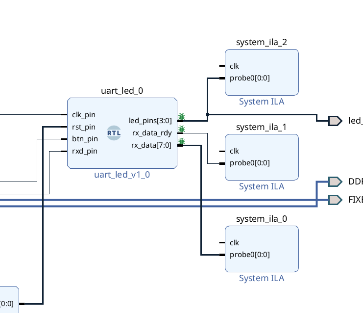
- If you want to combine two ports into one ILA, we can delete one (for example,
system_ila_0) and double click (i.e.system_ila_1). And set the Number of Probes as 2.
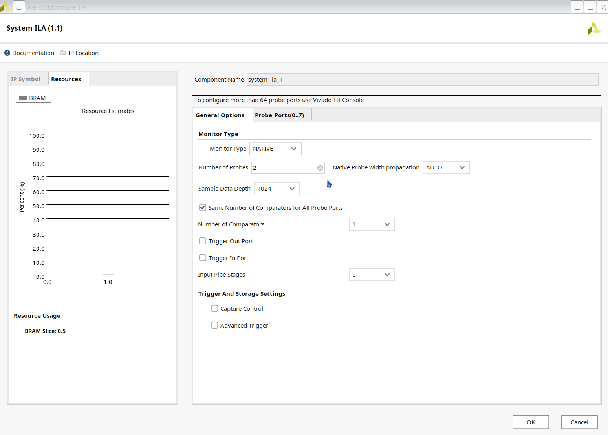
- We need to connect the
clkof ilas by ourselves. We can connect them to theclk_pin_0. Just make sure that the clk signal is the synchronized.
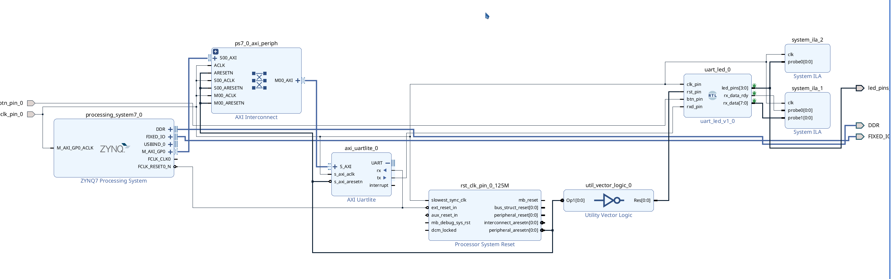
Step 3 Run synthesis, implementation and generate a bitstream
-
Click PROGRAM AND DEBUG –> Open Hardware Manager –> Open Target
-
Choose
Auto connect. Remember to turn on the PYNQ board and connect its USB cable to the computer. -
Select
Program Deviceand download the bitstream file to the board.
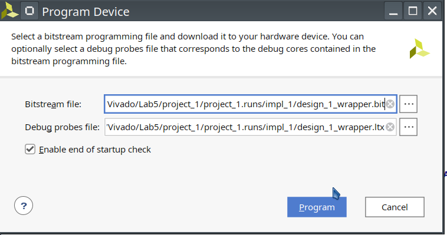
- The programming bit file be downloaded and the DONE light will be turned ON indicating the FPGA has been programmed. Debug Probes window will also be opened, if not, then select Window > Debug Probes. In the Hardware window in Vivado notice that there are two debug cores,
hw_ila_1andhw_ila_2. The hardware session status window also opens showing that the FPGA is programmed having two ILA cores with the idle state.
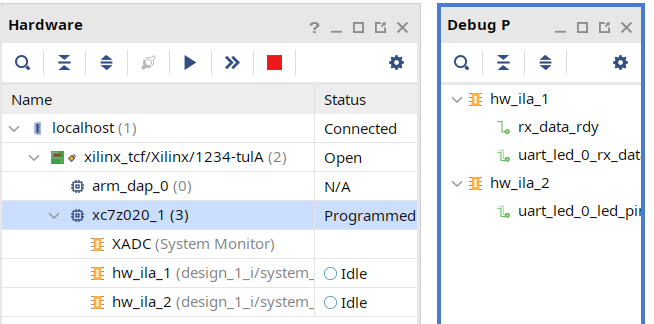
- Select the target
FPGA xc7z020_1, and click on the Run Trigger Immediate button to see the signals in the waveform window. Two waveform windows will be created, one for each ILA; one ILA window is for the instantiated ILA core and another for the MARK DEBUG method.
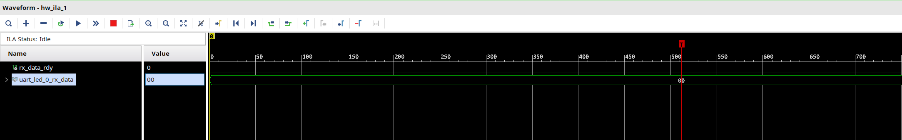
Setup trigger conditions to trigger on a write to led port (rx_data_rdy_out=1) and the trigger position to 512. Arm the trigger.
- In the Trigger Setup window, click Add Probes and select the
rx_data_rdy.
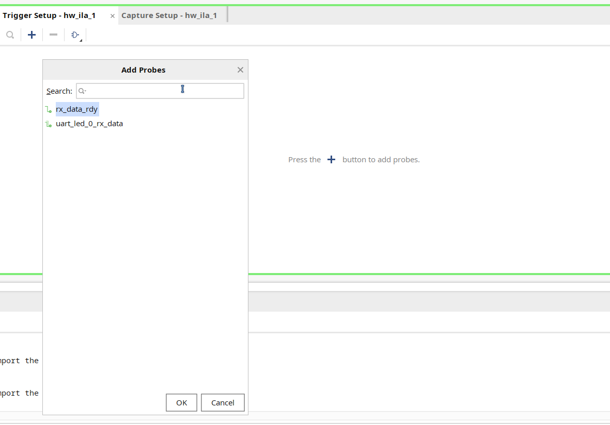
- Set the compare value (== [B] X) and change the value from x to 1. Click OK.
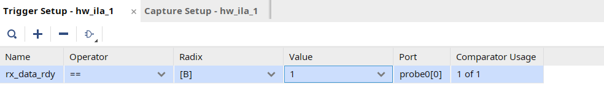
- Set the trigger position of the
hw_ila_1to 512.
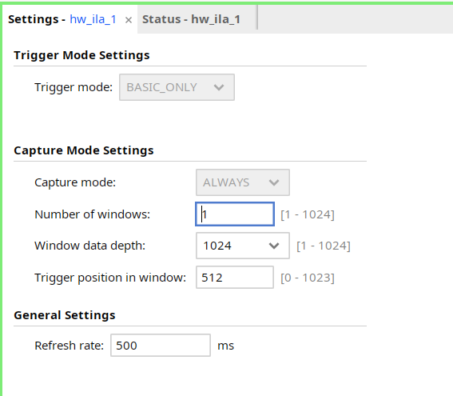
-
Similarly, set the trigger position of the
hw_ila_2to 512. -
Select the
hw_ila_1in the Hardware window and then click on the Run Trigger button. Observe that thehw_ila_1core is armed and showing the status as Waiting for Trigger.
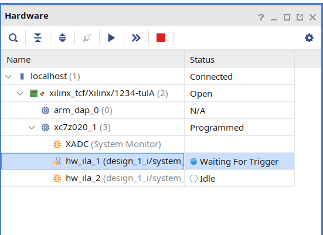
- Open a new jupyter notebook, run the below code and observe that the
hw_ila_1status changes from capturing to idle.
from pynq import MMIO
from pynq import Overlay
import sys
sys.path.insert(1, './src')
from uartlite import *
ol = Overlay("design_1.bit")
ol.download()
# Address of the ip core
# Address can be found in the .hwh file
ADDRESS = 0x42c00000
uart = UartAXI(ADDRESS)
# Setup AXI UART register
uart.setupCtrlReg()
# Loopback test
while True:
l = [0xd3]
uart.write(l)
- But maybe we can not see the waveform, we can
Program Devicelike below.
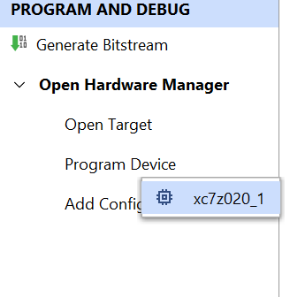
Then we can click on the Run Trigger button, we can observe the rx_data_rdy_out became 1 like below:
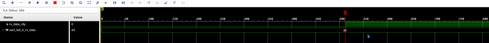
If you want to see more information about UART, please do the following
-
You can pull
baud_x16_en,over_sample_cnt_doneandrx_beginout and set them as a trigger. The enable signal is to flag the start state. We can add one code in theuart_rx_ctlfile. Don’t forget to debugtxport. -
Here we need to fix three files,
uart_rx_ctl.v,uart_rx.vanduart_led.v.
In the uart_rx_ctl.v file, please add the following code and connect rx_begin and over_sample_cnt_done out. To do this operation, please follow the previous description.
assign rx_begin = (state != IDLE);
In the uart_rx.v file.
module uart_rx (
// Write side inputs
input clk_rx, // Clock input
input rst_clk_rx, // Active HIGH reset - synchronous to clk_rx
input rxd_i, // RS232 RXD pin - Directly from pad
output rxd_clk_rx, // RXD pin after synchronization to clk_rx
output [7:0] rx_data, // 8 bit data output
// - valid when rx_data_rdy is asserted
output rx_data_rdy, // Ready signal for rx_data
output frm_err, // The STOP bit was not detected
output baud_x16_en, // 1-in-N enable for uart_rx_ctl FFs
output over_sample_cnt_done,
output rx_begin
);
/* */
uart_rx_ctl uart_rx_ctl_i0 (
.clk_rx (clk_rx),
.rst_clk_rx (rst_clk_rx),
.baud_x16_en (baud_x16_en),
.rxd_clk_rx (rxd_clk_rx),
.rx_data_rdy (rx_data_rdy),
.rx_data (rx_data),
.frm_err (frm_err),
.over_sample_cnt_done (over_sample_cnt_done),
.rx_begin (rx_begin)
);
In the uart_led.v file,
module uart_led (
// Write side inputs
input clk_pin, // Clock input (from pin)
input rst_pin, // Active HIGH reset (from pin)
input btn_pin, // Button to swap high and low bits
input rxd_pin, // RS232 RXD pin - directly from pin
output [3:0] led_pins, // 8 LED outputs
output rx_data_rdy, // Data ready output of uart_rx
output [7:0] rx_data, // Data output of uart_rx
output baud_x16_en,
output over_sample_cnt_done,
output rx_begin
);
/* */
uart_rx #(
.CLOCK_RATE (CLOCK_RATE),
.BAUD_RATE (BAUD_RATE)
) uart_rx_i0 (
.clk_rx (clk_pin),
.rst_clk_rx (rst_clk_rx),
.rxd_i (rxd_pin),
.rxd_clk_rx (),
.rx_data_rdy (rx_data_rdy),
.rx_data (rx_data),
.frm_err (),
.baud_x16_en (baud_x16_en),
.over_sample_cnt_done (over_sample_cnt_done),
.rx_begin (rx_begin)
);
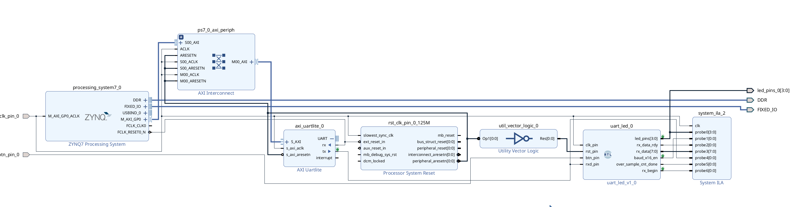
-
Generate the bitstream and load it to the board.
-
Set up the trigger.
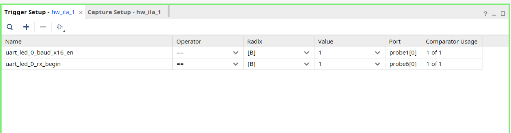
- Set the Number of windows as 512
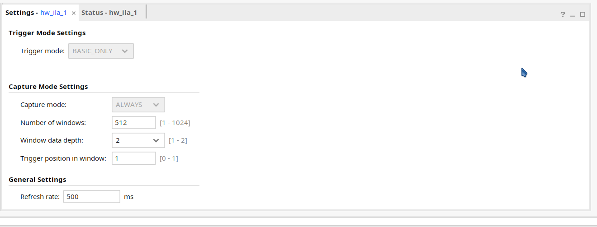
- In the jupyter notebook
while True:
l = [0xA5] #A5 is easier to be recognized
uart.write(l)
-
Back to the waveform window, you will see in the following first figure. For
axi_uartlite_0_tx, between the blue marker and the yellow marker, it has complete data. You will see that after 16 triggers, it starts to transmit the data and every bit occupies 16 triggers. -
In the following second figure, for the
rxsignal, we can seeuart_led_0_over_sample_cnt_done, it will first count 1/2 bit period, then begin to read the data.
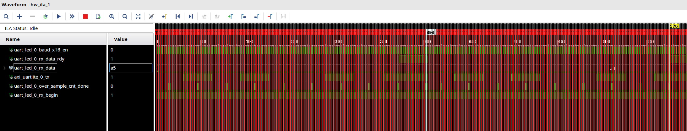
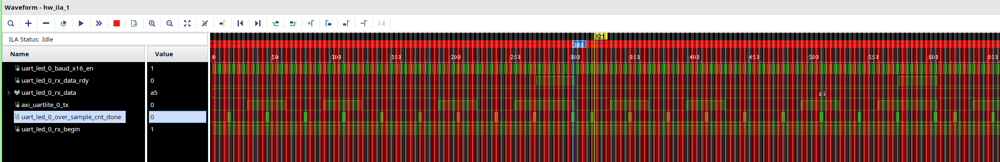